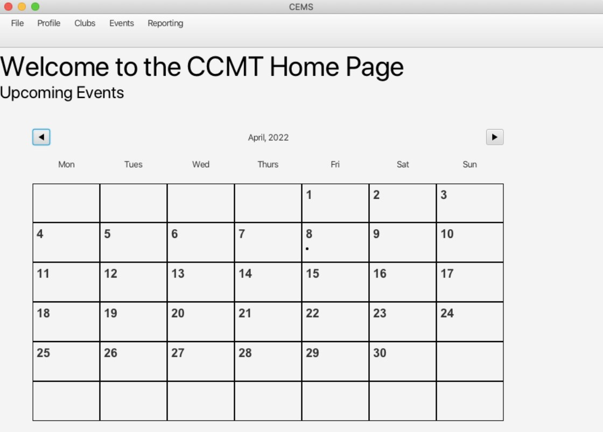

Club Event Management System
3rd Year School Project
Project Overview
The Club Event Management System was chosen between 4 projects to make into a Java application. Our project task was to design an application to help a ficticious student government manage its clubs and events. We ultimately decided to add functionality for 3 levels of administrators:
-
Admin
General administrators of individual clubs -
Admin+
Club presidents and treasurers, who would have greater access to financial details -
SuperAdmin
Members of the student government overseeing all of the clubs
The application that we created used Java for the programming language, fxml for the user interface pages, and MySQL for the database.
We were able to create, store and edit users, clubs and events. The application was password protected, with recovery questions and password hashing incorporated. Field validation was implemented for any forms that would send information to the database, or that needed to follow a specific format. Events, after being created, showed up as a dot on the day of the month (see image above). Clicking on a date would show a pop-up with the ability to edit an event, assuming the user has the correct permission.
The application was also able to produce real objects based on what the user needed. Reports on over 10 different financial aspects of a club were able to be generated, and then produced as either a PDF or Excel spreadsheet. Events that were created, updated or deleted could then send out email notifications to a specified email group, to notify them of the event.
My Contributions
-
User Interface
I was responsible for creating the majority of the user interface, including the FXML documents, and their individual controller classes that provided functionality and navigation.
-
Calendar System
The calendar was created using JavaFX, as we wanted it to be a bit more dynamic than FXML documents were allowing for. After the dust settled, I think it would have been a better idea to continue with FXML and create several classes to control the Calendar. Hindsight is always 20/20!
The calendar was the most challenging part of the project for me, but also the most rewarding. Having a newly created event populate in the calendar, and to be able to click on it and edit the pre-populated update screen was very satisfying.
-
Email System
This section definitely gave me the most headaches. From chasing around the libraries, to having Gmail not wanting to connect to an unsecure access point, the email system was very tricky. Getting a java program that I created to send out emails automatically was worth it though. Seeing a professional-looking email on Gmail was very cool!
To check out the project on GitHub, click on the GitHub logo below!
.png)